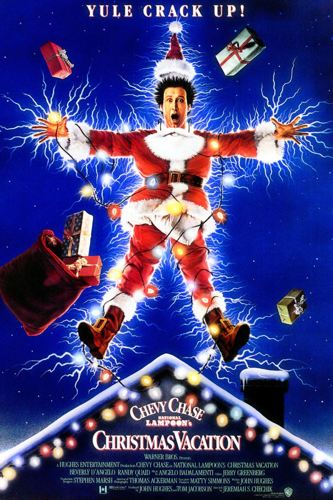

Disney A Christmas Carol
As the Holidays approach, Clark Griswold (Chevy Chase) wants to have a perfect family Christmas, so he stresses him and his family out trying to allign everything perfectly. Including house and tree christmas decorations. Things take a turn for the worse while everything goes wrong. His redneck cousin Eddie and family show up unannouced and Griswold doesn't receive his bonus causing more issues.
the message of the film is that you need to manage you expections. Much of Clark's frustration comes from his idealized vision of a family holiday. When he lets go and meets his family where they are, his enjoyment of the holiday increases dramatically.